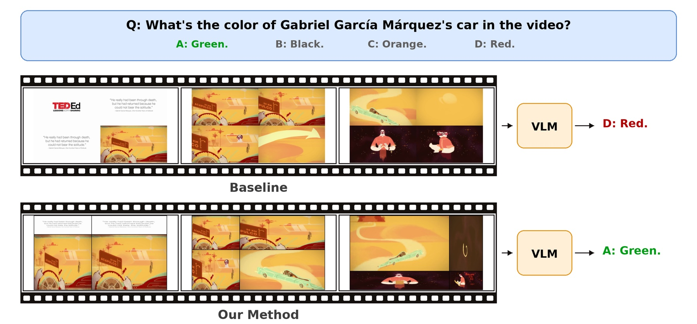
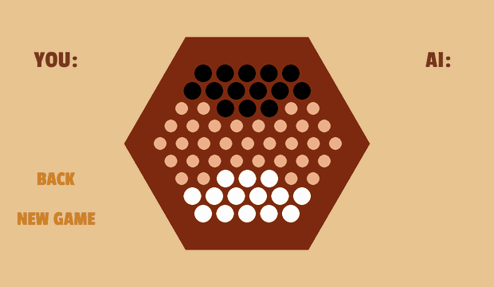
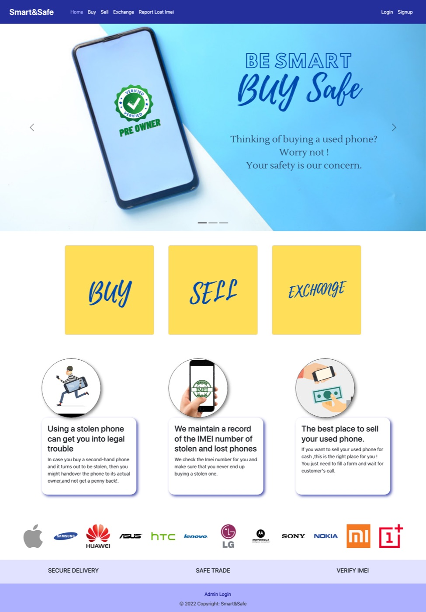
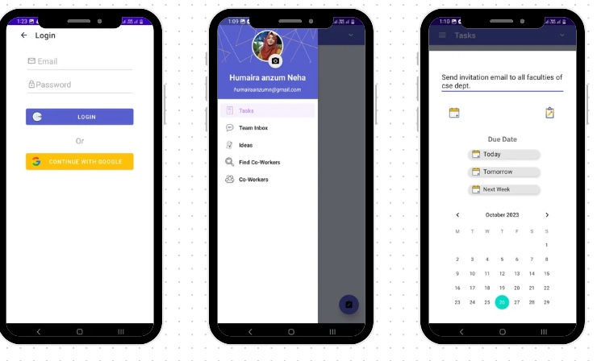

Humaira Anzum Neha
I am a Lecturer in the Department of Computer Science and Engineering at United International University and an M.Sc. student at BRAC University. My research interests lie at the intersection of human-centered AI, multimodal AI, Computer Vision, natural language processing, human–computer interaction, and accessibility.
My research experience highlights my interest in both developing intelligent systems and understanding the people they are designed to serve. My previous work has focused on assistive technology and digital health. Currently, I am conducting a qualitative HCI study with a marginalized community and exploring a model-agnostic visual prompting approach for training-free long-video understanding.
I am seeking PhD opportunities for Fall 2027 with a focus on human-centered AI. I aim to combine Computer Vision, NLP, and HCI to develop intelligent systems that respond to real-world needs, reduce everyday burdens, and remain accessible across diverse abilities, backgrounds, and contexts.
Ongoing work
Current research in human–computer interaction and multimodal AI.
Video creation and editing among people who stutter
An onboarding workshop and semi-structured interviews with eight people who stutter in Bangladesh to understand how they engage in video content creation to represent themselves and their community.
Reliability of vision-language models in reading expiry dates
A project that studies how reliably vision-language models read and reason across diverse expiry date formats for blind and low-vision users, along with strategies to improve their performance.
Research experience
Undergraduate research projects completed at KUET.
Object and currency recognition for the visually impaired
An edge-deployable system for object detection, Bangladeshi currency and denomination recognition, and face recognition. The project also included the collection and annotation of custom image datasets, including Bangladeshi currency images, for model training and evaluation.
Trained real-time object detection models (YOLOv5) on a custom annotated dataset to detect objects and classify Bangladeshi banknotes, and deployed them on an edge device (Raspberry Pi). Used ResNet-50 for face recognition to help users identify familiar people. Achieved 98.2% mAP for objects, 99.7% top-1 accuracy for currency, and 97.6% accuracy for face recognition.
Assistive glasses for navigation, fall detection, and reading
Assistive smart glasses that combine real-time obstacle detection, fall alerts, and on-device text recognition to read printed material aloud.
Integrated distance sensors (Time-of-Flight) with a motion sensor (accelerometer) on an edge device (Raspberry Pi) to provide real-time obstacle alerts and send fall alerts to caregivers. Implemented an OCR and text-to-speech pipeline that reads printed text aloud with 93.03% character accuracy.
Mobile application to measure blood component levels
A mobile application that records a 15-second fingertip video and extracts photoplethysmogram (PPG) signals from it to estimate glucose and hemoglobin levels using a deep learning model.
Calibrated camera settings for consistent video quality across lighting conditions and devices.

Academic projects
Selected software and artificial intelligence projects completed through coursework.
Query-guided visual prompting for long video understanding
Designed a frame scoring method using a lightweight vision-language model (CLIP) to select question-relevant frames and arrange them into asymmetric grids that give more space to more relevant frames, used as visual prompts for vision-language models without any fine-tuning. Using Qwen2.5-VL-7B, it improved pair accuracy on the MF2 benchmark from 16.9% to 23.5% over the Video Panels baseline.

GNN–BERT fusion for understanding music context
Leveraged graph neural network models to build an audio graph and fused them into a pre-trained language model (BERT) for textual feature extraction and class tagging. Cross-attention fusion raised micro-F1 on MagnaTagATune from 0.38 (BERT-only) to 0.52.
Abalone board game with AI opponent
A board game to play against an AI opponent built with Minimax search and alpha–beta pruning.

Smart&Safe
A marketplace for used smartphones with national identity verification, automated IMEI screening, and an administrative dashboard.

Together
A mobile application that helps teams assign tasks, track responsibilities, and manage shared deadlines.

Datasets & research resources
Curated resources developed to support reproducible research and downstream learning tasks.
MusicCaps-Curated-Tags
A derivative annotation dataset built on MusicCaps, adding a standardized multi-label vocabulary of 216 tags across five categories: genre, instrument, mood, vocal, and tempo.
Assistive Object Detection Dataset
Approximately 21,000 images across eight classes: chair, table, door, stairs, currency, commode, wardrobe, and person. Images are annotated with object-level bounding boxes in YOLO format.
Bangladeshi Currency Classification Dataset
A custom image dataset of Bangladeshi banknotes developed to train and evaluate the currency-denomination classification component of the assistive object-identification system.
Publications
Peer-reviewed conference papers spanning digital health and assistive Computer Vision.
Automated Object Identification for the Visually Impaired
Humaira Anzum Neha, Muhammad Sheikh Sadi, Md. Repon Islam, and Sadman Sakib.
An Assistive Device for the Visually Impaired for Enhanced Navigation and Reading
Sadman Sakib, Muhammad Sheikh Sadi, Md. Shanjid Arefin, Md. Repon Islam, and Humaira Anzum Neha.
Mobile Application to Collect Data and Measure Blood Component Level in a Non-Invasive Way
Humaira Anzum Neha, Sadman Sakib, Farhan Sadaf, and S. M. Taslim Uddin Raju.
Teaching & mentoring
Selected teaching, thesis supervision, and student mentoring activities.
Education
MSc, Computer Science and Engineering
B.Sc, Computer Science and Engineering
Higher Secondary Certificate
Secondary School Certificate
MSc coursework · BRAC University
Completed
- Research Methodology and Seminar Done
- Advanced Natural Language Processing Done
- Neural Networks and Fuzzy Systems Done
- Deep Learning for Computer Vision Done
This semester
- Data Mining Ongoing
- Fairness, Ethics and Explainability in AI Ongoing
Key undergrad coursework · KUET
Data & quantitative methods
- Applied Statistics BSc
- Data Mining BSc
AI, language & vision
- Artificial Intelligence BSc
- Image Processing BSc
- Natural Language Processing BSc
Skills
Achievements
Dean's List Award
— KUETAwarded for three consecutive years for consistent academic performance.
View certificateCGPA rank of 120 students
— KUET, 2018–2022Ranked in the top three of my cohort by cumulative GPA.
UNDP Women's Digital Innovation Hackathon
— 2021Designed and prototyped a community-based application idea to help parents of autistic children connect, share experiences, access support, and address social stigma. The prototype was selected among the hackathon's Top 10 entries.
View certificate